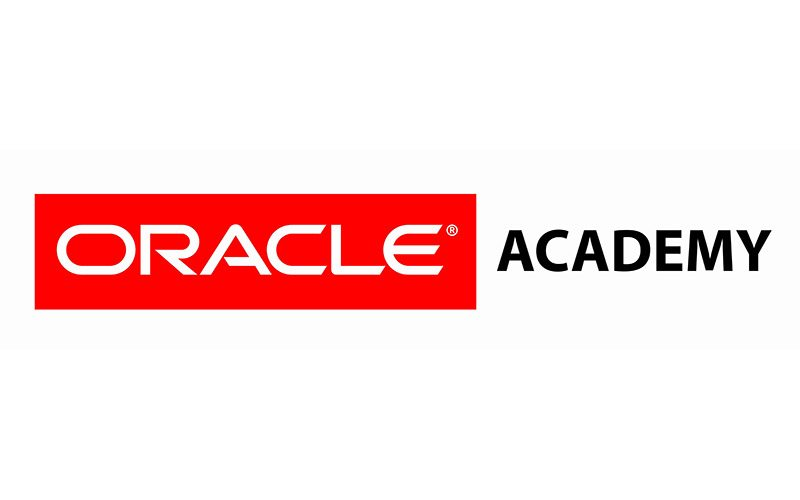
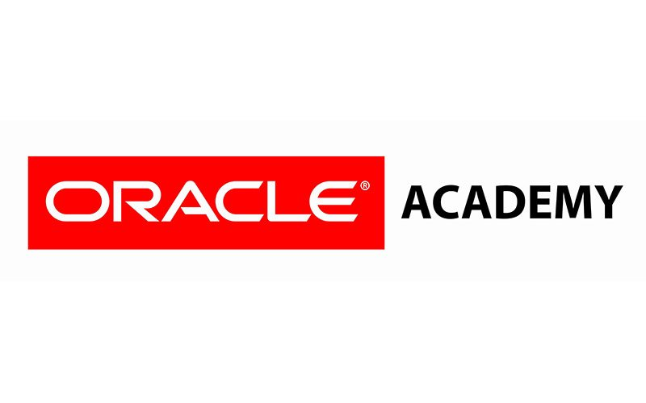

La carrera de Diseño y Desarrollo Web te brinda las habilidades necesarias para crear, diseñar y mantener sitios web interactivos y atractivos. Aprenderás a utilizar herramientas y tecnologías actuales, enfocándote en la usabilidad, accesibilidad y diseño visual. Esta carrera combina aspectos creativos y técnicos, preparándote para enfrentar los desafíos del mundo digital.
Diseño y Desarrollo Web
3 años
Profesional Técnico en Diseño y Desarrollo de Software
1. Diseño de interfaces web atractivas y funcionales.
2. Programación con lenguajes como HTML, CSS y JavaScript.
3. Desarrollo de aplicaciones web utilizando frameworks y tecnologías modernas.
Al culminar tu carrera podrás obtener las siguientes certificaciones

 

 IESTP Lurín
IESTP Lurín